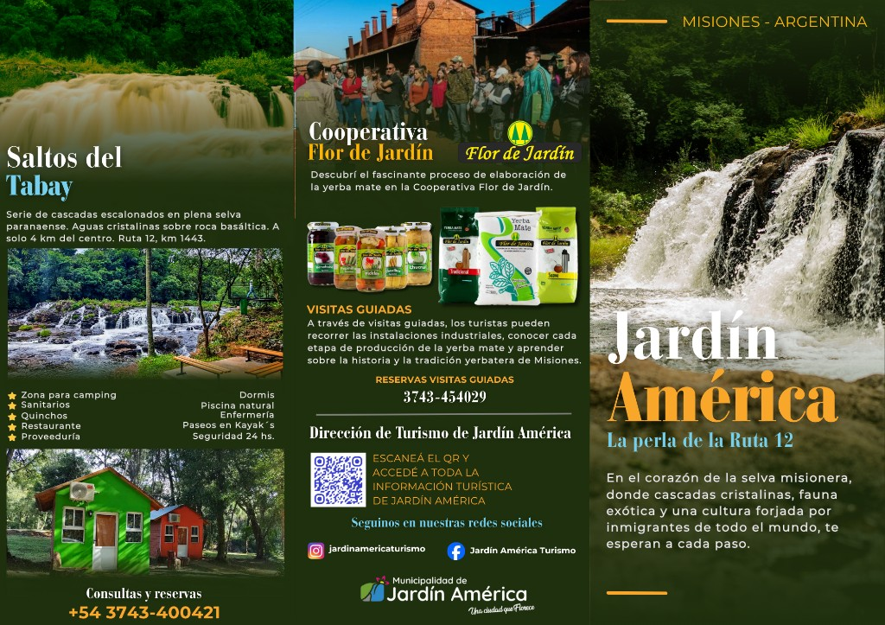
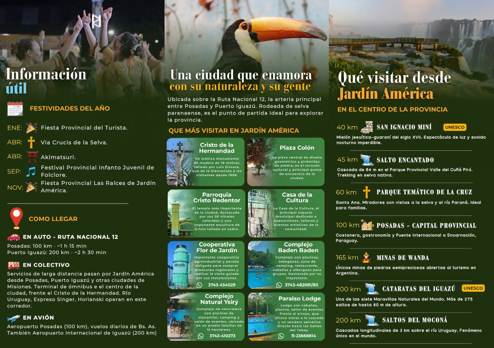

Folleto turístico
Material oficial de la Dirección de Turismo de Jardín América. Podés ampliar cada panel para leerlo con más detalle o descargarlo desde el navegador.


Material oficial de la Dirección de Turismo de Jardín América. Podés ampliar cada panel para leerlo con más detalle o descargarlo desde el navegador.

